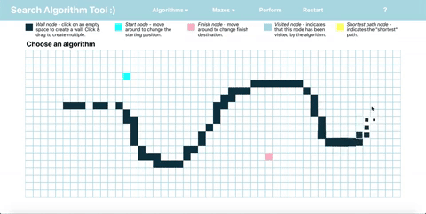

July 2020
I built a search algorithm web app that helps users learn about graph search algorithms such as Dijkstra's and A*, with built in tools such as auto-generating mazes, the ability to add walls, and more.
React.js HTML CSS Javascript
•Used React.js to combine the style and formatting of the HTML & CSS with the graph-search and maze creating algorithms, which were written in Javascript.
•Implemented React.js using hooks that handeled the state of the walls, the nodes currently being searched, the discovered nodes, and the start & end points simultaneously.